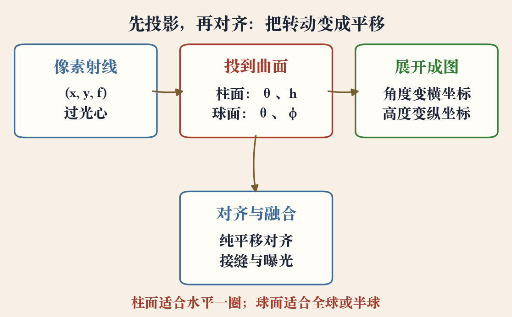
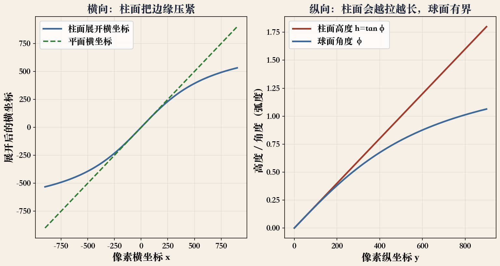
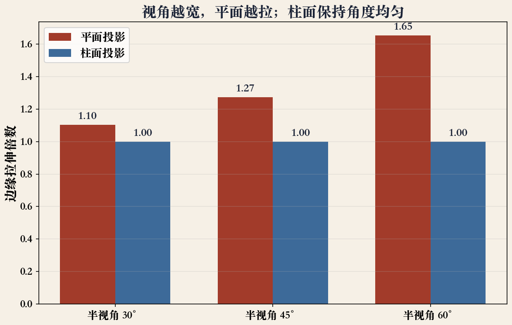

第 8 章 §8.2.6 · 柱面/球面投影
对齐之后，往哪放
上一集把多张图的姿态对齐了。
这一集把图投到同一曲面，再展开。
柱面像一圈纸，球面像一个球。
选哪个，决定能拍多大、边缘会不会拉。
依据：原书第 523 页
两件事
对齐：谁对谁
投影：往哪放
投影决定边缘变形
正课第七十集
01 / 16
第 8 章 §8.2.6 · 原书第 523 页
先投影，再对齐
不直接估单应，先把图投到柱面坐标。
再用纯平移模型对齐。
只适用于相机水平，或倾角已知。
相机歪了，竖线在柱面上也会弯。
依据：原书第 523 页
前提
相机保持水平
或者倾角已知
否则竖线会弯
正课第七十集
02 / 16
规范位置 · 原书第 523 页
把相机摆正
规范位置：旋转矩阵是单位阵。
光轴对准 z 轴，y 轴竖直向上。
像素 (x, y) 对应射线 (x, y, f)。
f 是焦距。
依据：原书第 523 页
(x, y, f)
像素 (x, y) 过光心；f 为焦距；投影把射线方向换成角度与高度
正课第七十集
03 / 16
投影管线 · 程序生成
四步走：把方向记到曲面上
像素射线先投到曲面。
柱面记角度 θ 和高度 h。
球面记 θ 和 φ。
展开后做纯平移、接缝和曝光。
依据：本集实验

投影管线：像素射线、柱面或球面、展开、对齐与融合｜程序生成，未用教材或论文原图
正课第七十集
04 / 16
第 8 章 §8.2.6 · 原书第 524 页
柱面：角度管左右，高度管上下
单位半径柱面，点用 θ 和 h 表示。
三维方向正比于 (sinθ, h, cosθ)。
横坐标 s·θ，θ = arctan(x/f)。
纵坐标 s·h，h = y/√(x²+f²)。
依据：原书第 524 页
θ = arctan(x/f)
h = y / √(x² + f²)
横坐标 s·θ，纵坐标 s·h；s 是柱面半径
正课第七十集
05 / 16
第 8 章 §8.2.6 · 原书第 524 页
半径 s：把柱面卷多大
s 是任意缩放因子，也叫柱面半径。
设 s = f，中心附近畸变或缩放最小。
逆变换：横坐标用 f·tan，纵坐标乘 sec。
正反成对，图能投过去，也能查回来。
依据：原书第 524 页
怎么选
s=f：中心最接近原图
s 越大，展开图越宽
不是越小越好，看输出分辨率
正课第七十集
06 / 16
第 8 章 §8.2.6 · 原书第 524 页
球面：把天和地也包进来
全景要包含完整球面或半球，柱面就不够。
球面用两个角度：θ 管经度，φ 管纬度。
三维方向是 (sinθcosφ, sinφ, cosθcosφ)。
展开后越靠近极点，横向越挤。
依据：原书第 524 页
何时用
全球或半球视野
不只是一条柱面条带
代价：极点附近横向挤
正课第七十集
07 / 16
映射曲线 · 程序生成
曲线：柱面压边，球面有界
左边横轴是像素 x。
蓝线柱面按角度走，边缘压紧。
绿虚线平面按像素走，边缘拉出去。
右边：柱面 h 越拉越长，球面 φ 有界。
依据：本集实验；公式见原书第 524 页

柱面与平面横向展开对比；柱面高度与球面角度的纵向对比｜程序生成，未用教材或论文原图
正课第七十集
08 / 16
第 8 章 §8.2.6 · 原书第 525 页
水平转动：二维降成一维
相机保持水平，只绕竖直轴转动。
不同转角的图，在柱面上只差水平平移。
小量竖直倾斜，可用竖直平移补偿。
前提仍是水平，歪了就不是纯平移。
依据：原书第 525 页
常用条件
相机水平
只绕竖轴转
配准降成一维平移
正课第七十集
09 / 16
第 8 章 §8.2.6 · 原书第 526 页
专业设备：把未知变已知
全景云台能控制俯仰，在特定角度卡住。
电动转头常用于大范围拍摄。
设备保证覆盖均匀、重叠合适。
已知角度能把搜索范围缩小很多。
依据：原书第 526 页
云台的价值
控制俯仰与转角
覆盖均匀、重叠合适
把未知角度变成已知
正课第七十集
10 / 16
第 8 章 §8.2.6 · 原书第 526 页
极坐标：另一种投影函数
北极在光轴上，不在竖直方向。
用半径 r 和角度 θ、φ 表示。
x、y 很小时，近似为 x 方向乘 s 除以 z。
中心接近透视，越往边缘越卷。
依据：原书第 526 页
鱼眼模型
北极沿光轴
中心接近透视
边缘越卷
正课第七十集
11 / 16
十一项断言 · 程序生成
实验：公式自洽，拉伸算得出
柱面、球面正反变换往返误差在 1e−13 量级。
纯偏航后，柱面横坐标整体平移，偏差在机器精度。
半视角 60 度，平面整体距离比约 1.65。
柱面保持 1；这不是局部放大率。
依据：本集实验

边缘拉伸：半视角 30、45、60 度时平面约 1.10、1.27、1.65 倍，柱面保持 1.00｜程序生成，未用教材或论文原图
正课第七十集
12 / 16
柱面/球面/平面 · 选型归纳
选型：假设最匹配
水平一圈，用柱面。
要包天包地，用球面。
视野窄、又想保留直线，用平面。
相机乱晃或有近物，回单应或全局对齐。
依据：原书第 523–526 页；选型为本集归纳
三种面
柱面：长卷
球面：全球或半球
平面：普通照片
正课第七十集
13 / 16
工程归纳 · 非原书列举
工程五步：顺序别反
确认相机水平，或记录倾角。
留足重叠，别让相邻图擦边。
估焦距，f 不准会整体伸缩。
选柱面或球面，再定 s。
依据：本集归纳；公式见原书第 524–526 页
顺序
先正相机
再投影、对齐
最后才修接缝与曝光
正课第七十集
14 / 16
适用范围 · 第 8 章 §8.2.6
边界：视差它管不了
柱面、球面加纯平移，靠相机只转不平移。
相机走动，近处和远处相对位置会变。
纯平移解释不了，画面出现视差重影。
不满足水平或已知倾角，就别硬套。
依据：原书第 523 页；视差回退为本集归纳
回退路线
视差重影：别硬套
回单应、分层或三维重建
先认清假设，再选工具
正课第七十集
15 / 16
移交 · 曝光补偿与多频段混合
收束：投影放对位置
柱面用 θ 和 h，球面用 θ 和 φ。
水平转动在柱面上变成纯平移。
s 设成 f，中心畸变最小。
极坐标还能解释鱼眼。
依据：原书第 524–526 页；下一集为曝光与融合
下一集
相邻图亮度不一样
接缝看得见
曝光补偿 + 多频段混合
正课第七十集
16 / 16